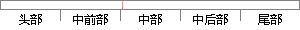

6 任务管理模块的设计
片段位置图

相似结果
相似片段：31 图 4-6任务管理... 34 图 4-7聚类结果......热点舆情发现与预警模型的设计 暨南大学硕士论文 18 聚类分析模块大量热点舆情中文预处理基于内容分析预警模块热...
| 标题 | 《网络热点舆情的发现及预警模型研究》 |
| 对比库 | 中国学位论文全文数据库 |
| 作者 | 宋嘎子 |
| 机构 | 暨南大学 |
| 分类 | 计算机系统结构 计算机信息安全 |
| 年份 | |
| 相似率 | 100% （严重抄袭） |
※ 片段修改建议 ※
近似词参考：- 设计：计划
- 任务：使命 义务
- 管理：办理 经管 治理
系统自动生成语句：6 使命办理模块的计划
注：本片段修改建议为系统自动生成，仅供参考。